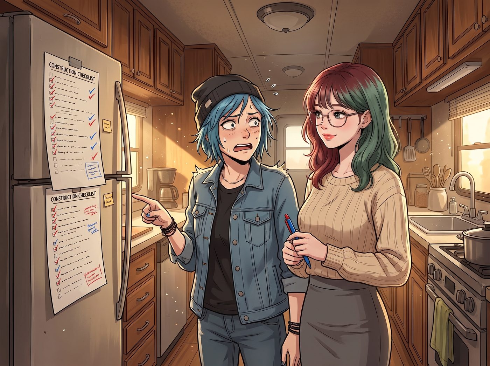

四週施工日誌（倒敘）

「給老娘一個月。」
Chloe 說這句話的時候，口氣大得像是要徒手蓋一座城堡。
但到了第二天早上，當 Lily 把一張寫滿了兩頁的施工清單貼在大拖車的冰箱門上時，Chloe 才第一次意識到，這一個月到底意味著什麼。
清單上的每一項後面，都被 Lily 用紅筆和藍筆分成了兩種：
藍筆寫的是「Chloe」。
紅筆寫的是「需持照師傅」。
「這是什麼意思？」Chloe 指著那一長串紅字，「老娘什麼都會修，為什麼要外包？」
「因為有些東西，不是會不會的問題，學姐。」Lily 推了推眼鏡，「是誰簽名負責的問題。」
第一週：紅字與藍字
Lily 的解釋很簡單。
化糞系統，要由郡政府認可的持照業者設計、安裝，再由衛生部門的檢查員來看過，才能把土埋回去。
電力，這片地在 Victoria 家族信託的名下，不在 Chloe 名下。華盛頓州雖然允許屋主在自己的房子裡動手接線，但 Chloe 不是屋主。所以從太陽能板、電池櫃、柴油發電機，一路到三節車廂的主線路、逆變器和配電箱，必須請有執照的電工來接、來簽名、來等檢查。
水井也一樣。華盛頓州規定，鑽井必須由持照的鑽井業者施工，開工前要向州政府報備；鑽好之後，還得把水樣送去檢驗細菌和硝酸鹽，合格了才能喝。
三節車廂和 Victoria 那個貨櫃衣帽間，各要裝一台分離式熱泵空調。安裝時需要處理冷媒，而處理冷媒的人必須持有聯邦的專門證照。
客廳角落那座燒柴爐也一樣。爐子本身要符合環保標準，煙囪要由合格的師傅安裝，裝好之後，還得等消防和建管的人來檢查。
「也就是說，」Chloe 盯著清單，臉色越來越難看，「最酷的那幾樣，全都不歸我？」
「最需要檢驗的那幾樣，不歸您。」Lily 糾正她，「剩下的，全部歸您。」
Chloe 往下看。藍字那一欄，比紅字長了三倍：車床基座和鋼構棚的模板、抹面；鋼構棚的骨架焊接；三節車廂的隔熱層、內牆和隔間（鐵皮車廂一冷就會在內壁結露，不先隔熱，牆裡遲早發霉）；燒柴爐底下的石板爐床和背後的防火隔板；太陽能板的支架和發電機的小棚子；從井口的抽水馬達、壓力水箱一路接到三節車廂的水管；丙烷桶到熱水器的管線；屋簷下的集雨桶；兩節臥室車廂裡的四張床架和衣櫃；Max 和 Chloe 房裡那間小淋浴廁所的隔間；Max 的暗房；Victoria 貨櫃裡的層架；Kate 菜圃的木框；還有一切需要扛、需要鋸、需要鑽的東西。
Chloe 看了很久，嘴角慢慢翹了起來：「……這還差不多。」
第一週，電工來了兩天。Chloe 抱著手臂在旁邊站了整整半天，越看越手癢，最後終於忍不住開口：「喂，那個接地你接反了吧？」
電工愣了一下，低頭一看，罵了一聲，重新接了一次。
從那天起，電工每次動工前，都會先問 Chloe 一句：「妳要不要過來看一下？」
第一週還有另一個問題：網路。
在林子裡，手機只剩下一格，時有時無，連一張照片都傳不出去。Victoria 第一時間打電話給電信公司，問拉一條商業專線進來要多少錢。對方報了一個每英里數萬美元的數字，然後補了一句：「施工排程大約六到八個月。」
Victoria 拿著手機沉默了三秒，默默地掛斷了。
最後解決問題的，是 Chloe 的一根鐵桿。她在懸崖邊那塊觀景露台上豎起一支四公尺高的天線桿，頂端裝了一支定向天線，對準十幾英里外山頭上的基地台，再接上一台訊號增強器和一台 4G 路由器。速度慢得像在用撥接，流量還有上限，但至少訊息傳得出去了，Lily 也勉強能把化糞池的申請書上傳到郡政府的系統裡。
每天傍晚，大家都會不約而同地端著晚餐，擠到那根天線桿底下，因為那裡的訊號比車廂裡多半格。
第二週：木頭和錢
第二週，第三節車廂到了。
那是 Victoria 從一家鐵道物資回收商手裡買下的舊臥鋪車，由一台平板拖車和一部吊車一起運上山。吊車把它放上 Chloe 前一週就用混凝土墩子和鋼樑準備好的地基時，整個營地的人都屏住了呼吸。
「左邊，左邊再兩英寸……好，停！」Chloe 站在地基旁邊，指揮得聲嘶力竭。
車廂落下，地基紋絲不動。
Chloe 鬆了一口氣，一屁股坐在泥地上。
但真正的麻煩，是材料。
那一年，全美國的人都被關在家裡搞裝修，木材的價格一路往上翻，一張普通的夾板，比前一年貴了將近一倍。Chloe 拿著採購單從鎮上的建材行回來時，臉色鐵青：「他們瘋了。那些木頭是用黃金做的嗎？」
Victoria 從小拖車裡探出頭，接過那張單子看了一眼。
第二天，她親自開車去了一趟建材行。她沒有用 Chase 這個姓氏壓人，也沒有找誰的把柄。她只是穿著一件剪裁俐落的大衣，坐在經理的辦公室裡，把兩個月的用量、付現的條件、以及「我們之後還有一整片營地要蓋」這件事，慢條斯理地擺上了桌。
她回來的時候，手裡拿著一張打了八五折、並且保證分批到貨的訂單。
「怎麼辦到的？」Chloe 目瞪口呆。
「這叫採購談判，猴子。」Victoria 把單子塞進她手裡，「我從小看我爸談了二十年。總算有一次，派上了用場。」
第三週：雨和枕木
第三週，下了整整五天的雨。
預拌混凝土車原本約好週二來澆鋼構棚的基座，但地上全是爛泥，車開不進來。Chloe 站在雨裡看著那片泥地，氣得一腳踢翻了一個水桶。
那天晚上，大家擠在大拖車的餐桌旁吃 Kate 煮的燉豆子。Chloe 一句話都沒說，用叉子戳著碗底。
「所以，」Lily 在筆記本上劃掉一行，又往後挪了一格，「混凝土順延四天，鋼構棚的焊接順延四天，但隔熱層和內牆不受影響，可以提前做。整體進度，延後兩天。」
「兩天？」Chloe 抬起頭。
「兩天。」Lily 說，「我在排程裡，本來就留了一週給這裡的雨季。」
Chloe 盯著她看了一會兒，終於把叉子放下了。
也就是在那個雨天，Kate 從車廂旁邊拖出了幾根舊枕木，準備做她的菜圃。
「Kate 學姐，請等一下。」Lily 撐著傘走過來，蹲下去看了看那幾根黑黝黝的木頭，「這些是舊鐵路的枕木，以前通常會用木焦油這類防腐油浸過。拿來圍花圃沒問題，但如果要種吃的東西，那些化學物質可能會滲進土裡。」
Kate 愣了一下，看著自己那盒迷迭香和番茄的種子，有點失落。
那天晚上，Chloe 從工坊的廢料堆裡翻出了一疊沒用完的雪松木板。雪松本身就耐潮、耐腐，不需要任何處理。第二天一早，Kate 的三個菜圃就用它們圍好了。
Kate 蹲在新的木框旁邊，摸了摸那還帶著香氣的雪松板，回頭對 Chloe 笑了一下：「謝謝妳。」
「謝那個書呆子吧。」Chloe 擺擺手，「老娘只是負責鋸木頭。」
同一週，大拖車的餐桌上還開了一場家庭會議，議題只有一個：車廂完工之後，室內能不能抽菸。
「不能。」Victoria 第一個舉手，「我那一卡車的真絲和羊絨，吸了菸味就全毀了。」
「Lily 的伺服器也不喜歡菸灰。」Kate 小聲地舉起手，「而且……我烤東西的時候，聞到菸味會有點難過。」
Chloe 轉頭看向 Max，眼神裡寫滿了「妳一定會站在我這邊吧」。
Max 猶豫了一下，然後很抱歉地，也慢慢舉起了手：「……我的頭髮每天早上都是妳的菸味。」
三比一。Lily 棄權，理由是「這屬於居住品質議題，不屬於合規議題」。
「叛徒！妳們全都是叛徒！」Chloe 拍著桌子抗議，但抗議無效。
那天晚上，她一個人消失了兩個小時。
第二天早上，大家發現中間那節車廂的後門外，多了一個小角落：一片波浪板屋頂擋雨，兩面舊木板釘成的擋風牆對著海風那一側，一張從報廢車上拆下來的皮椅，和一個咖啡罐改的菸灰缸。離鋼構棚和那個裝油料的鐵櫃，都遠遠的。
Chloe 叼著菸坐在皮椅上，翹著二郎腿，一臉「老娘才不稀罕妳們的車廂」的表情。
「這是全營地唯一一個，」她對著路過的 Max 宣布，「可以合法點火的 VIP 吸菸室。」
從那以後，Chloe 在車廂裡，嘴裡永遠只叼著一根沒點燃的菸。真要點火的時候，她就推開後門，走進那個小角落。
到了那年冬天，那張皮椅旁邊多了一台小小的戶外瓦斯暖爐。Victoria 說那是她買錯型號、退不了貨，只好丟在那裡。沒有人拆穿她。
第四週：兩隻手
日子就是這樣過的。
每天早上六點，Chloe 被鬧鐘叫醒，在大拖車那間轉個身都會撞到手肘的廁所裡刷牙，然後扛著工具出門。Kate 已經在戶外廚房的兩口瓦斯爐上煎好了蛋。Lily 在小拖車的餐桌上打電話，跟化糞系統的業者確認下一次檢驗的時間。Victoria 開車去鎮上，跟建材行確認下一批木料。Max 背著相機，哪裡需要人扶梯子，就去哪裡。
每三天，五個人擠進兩台車，開十五分鐘去卡車休息站，一人投兩塊五的硬幣，搶那五分鐘的熱水。每週一次，所有人的髒衣服被塞進三個大袋子，送去鎮上的自助洗衣店，Max 和 Kate 坐在烘衣機前，一邊等一邊看那些衣服在玻璃後面打轉。
第四週的某個晚上，Chloe 從鋼構棚回來的時候，已經累得連話都說不出來了。
她在大拖車的餐桌旁坐下，攤開雙手。那雙手上全是新的割傷、燙傷和水泡，指甲縫裡的黑色機油和水泥灰，怎麼洗都洗不掉。
Max 沒有說什麼。她拿來一條熱毛巾，坐到 Chloe 身邊，把她的手放在自己的膝蓋上，一根手指一根手指地慢慢擦乾淨，再擠了一點護手霜，從掌心揉到指尖。
Chloe 靠在拖車的牆上，閉著眼睛，任由她擺弄。
「妳知道嗎，」過了很久，Chloe 小聲說，「以前在波特蘭，我修的都是別人的東西。」
「嗯。」
「這是第一次，」她頓了頓，「我在蓋我們自己的。」
Max 沒有回答，只是低下頭，在那隻手的手背上，輕輕親了一下。
Chloe 的呼吸慢慢變得綿長。她靠著牆，就那樣睡著了，手還放在 Max 的膝蓋上。
那天晚上，Max 沒有拍照。
她只是在 Lily 貼在冰箱門上的那張清單上，看見最後一行藍字的旁邊，多了一個 Lily 用紅筆打的勾。
清單上，再也沒有沒完成的事了。
那個箱子
完工前兩天，一台快遞貨車沿著泥濘的林道開了上來，卸下一個長方形的大紙箱，收件人寫著 Lily。
箱子裡，是一個白色的碟形天線，和一張印著 Starlink 字樣的說明書。
車廂裡安靜了足足五秒。
「……那是什麼？」Max 問。
「星鏈的衛星網路終端機。」Lily 一邊拆包裝，一邊平靜地回答，「SpaceX 今年夏天在西北部發了一批測試邀請。」
「等等。」Chloe 指著那個碟子，「新聞上不是說，那玩意兒連公開測試都還沒開始嗎？妳是怎麼搞到的？妳黑進了馬斯克的伺服器？」
「沒有。」
「那妳威脅了 SpaceX 的哪個主管？」Victoria 瞇起眼睛。
「也沒有。」
Lily 把碟形天線從箱子裡抱出來，推了推眼鏡。
「三個月前，我填了一張報名表。」
所有人盯著她。
「我只是把每一個欄位都填滿了。」她說，「經緯度、海拔、天空遮蔽率、附近基地台的距離、預計的使用情境、願意提供的測試回饋頻率。附件是 Chloe 學姐量的地形照片，和我做的一份二十頁的場址評估報告。」
她頓了頓：
「他們大概沒收過那麼完整的表格。」
Chloe 張著嘴，看了看她，又看了看那個碟子，最後轉頭看向懸崖邊自己那根辛辛苦苦豎起來的天線桿。
「……所以老娘那根桿子，」她的聲音有點悲涼，「只用了三個禮拜？」
「不會浪費的，學姐。」Lily 認真地說，「它是全營地最高的一根鐵桿。以後，您可以在上面蓋點別的東西。」